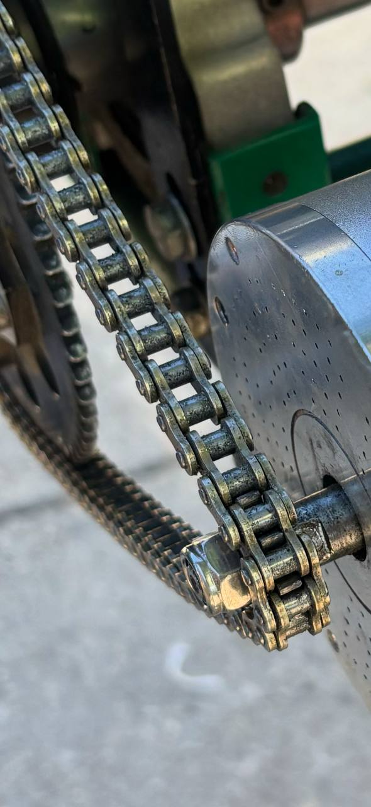

Transmission System
Current Configuration - 219 Kit
The kart currently uses a standard 219 pitch karting transmission system. This is the definitive configuration after testing and discarding the original T8F kit that came with the motor.
Components
Chain
View gold 219 chain installed on the kart

- Type: IRIS 219 pitch chain
- Color: Gold
- Length: 100 links
- Status: Installed and working
- Purchase link: IRIS 219 Chain at KPS Racing
Rear Sprocket (Corona)
- Type: Aluminum 219 pitch sprocket
- Color: Black anodized
- Teeth: (Check sprocket for exact number)
- Status: Damaged - needs replacement (~20€)
- Damage cause: Used incorrectly with T8F chain (incompatible pitch)
- Replacement link: 219 Aluminum Sprocket at KPS Racing
Front Sprocket (Piñón)
- Type: Custom 219 pitch sprocket
- Manufacturing: Laser cut (custom design)
- Material: Steel
- Teeth: Multiple options manufactured with different tooth counts
- Special features: Custom design for non-standard Chinese motor shaft
Why Custom Front Sprocket?
The motor we purchased (Kunray MY1020) comes with a non-standard Chinese shaft configuration:
- Shaft diameter: 10mm
- Keyway: None
- Length: Very short
Standard 219 karting sprockets cannot be easily adapted to this shaft, so we designed and laser-cut custom sprockets that:
- Maintain the correct 219 pitch for chain compatibility
- Fit the 10mm shaft without keyway
- Provide secure mounting despite the non-standard shaft
The custom sprocket design was completed in early 2024 and manufactured via laser cutting service for a minimal cost.
Discarded T8F Kit
The motor originally came with a T8F transmission kit:
- Chain: Black T8F chain
- Rear sprocket: Black T8F sprocket (never used)
- Front sprocket: Black T8F 11-tooth sprocket
This kit was never intended for permanent use because:
- T8F is not a standard karting pitch
- Finding compatible replacement parts would be difficult
- The T8F rear sprocket couldn't be easily mounted on the kart's axle
⚠️ These components should be stored separately or discarded to avoid confusion.
What do 219 and T8F mean? (Technical Details)
Chain Designation Explained
219 Chain - Standard karting chain designation - Pitch: 7.774mm (0.306") - Roller diameter: 4.59mm - Originally invented as timing chain for Kawasaki motorcycles - European/Japanese standard for 2-stroke karting - Does NOT follow standard ANSI numbering formula
T8F Chain - "T" = Chain type designation - "8" = 8mm pitch - "F" = Manufacturer designation - Pitch: 8.000mm - Roller diameter: 4.7mm - Common in Chinese electric scooters and pocket bikes - Also known as 05B chain
What is "Pitch"?
The pitch is the distance between the centers of two consecutive chain rollers. It's the most critical measurement for chain compatibility.
Typical Usage
- 219: Professional karting standard, especially 2-stroke racing in Europe and Japan
- T8F: Electric scooters, pocket bikes, and electric mobility devices (mainly Chinese market)
Installation Notes
With the motor mount moved slightly backward (compared to the original 3D-printed mount), there is now sufficient clearance to properly install and tension the 219 chain.
Correct Configuration Checklist
- Gold 219 chain installed
- 219 rear sprocket mounted (replace damaged one first)
- Custom 219 front sprocket mounted
- Proper chain tension adjusted
- All T8F components removed from work area
Future Improvements
- Document exact tooth counts for ratio calculations
- Add chain tensioning procedure
- Include maintenance schedule
- Calculate speed/torque ratios for different sprocket combinations